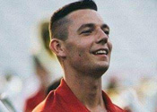

* denotes Colts Alumni
Design
Alex Albertson
Program Director \ Percussion Supervisor & Front Ensemble Arranger

Alex Albertson is currently a music teacher at Logan-Magnolia Community Schools in Logan, Iowa. His curricular responsibilities include teaching the 5th grade, 6th grade, junior high, and high school concert bands. He also directs the Panther Marching Band, jazz band, and the pep band. In 2018, he was awarded the Southwest Iowa Young Band Director Award for his work and success with the Logan-Magnolia bands.
In addition to teaching full-time in a public school, Alex is or has been a percussion educator, clinician, and composer in the Omaha, Nebraska, area for various programs, such as Bellevue East High School, Millard North High School, Millard South High School, Elkhorn High School, and Iowa Western Community College. Additionally, he is actively involved in the WGI arena as the director and designer for Railmen Indoor Percussion, helping the group reach a 4th place finish in the PIA Class at the 2018 WGI World Championships. Prior to teaching in Omaha, he worked as a percussion instructor at Lincoln-Way East High School and Pioneer Indoor Percussion in Chicago's south suburbs. Alex has spent several years on staff with the Colt Cadets and is thrilled to return as a percussion arranger and program director in 2019.
Alex earned his Bachelor's degree in music education from Western Illinois University. During his time there, he was named a winner of the WIU School of Music 2013 Concerto/Composition Competition, where he performed with the university's orchestra. He is also proud to be an alumnus of the Colts Drum & Bugle Corps and Rhythm X Indoor Percussion.
Andrew Eaton
Corps Director, Colt Cadets Drum & Bugle Corps

Andrew graduated from Indiana State University, where he majored in music, playing French horn in multiple ensembles along the way. He continued his education at Western Iowa Technical Community College in Sioux City, Iowa, to study band instrument repair, where he also played horn in the Morningside College symphony and wind ensemble. After graduating from Western Iowa, Andrew moved to the suburbs of Chicago in 2006, where he is now the head of brass repair in one of the nation's largest music shops.
Andrew's drum corps experience includes the 1999 and 2002 summers with the Glassmen Drum & Bugle Corps from Toledo, Ohio. He played mellophone both summers and had the opportunity to learn from some of the best music educators in the activity. He has taught the marching bands at Lake Central High School in St. John, Indiana, Center Grove High School in Greenwood, Indiana, Clay City High School in Clay City, Indiana, and the Lincoln Way Marching Band in New Lenox, Illinois.
Andrew will be starting his twelfth year with the Colts organization, where he has taught mellophone for the Colts and instructed brass and visual for the Colt Cadets, as well as lead the design team during the 2013 and 2014 seasons. When not teaching or doing office work, he enjoys spending time with his wife, Melanie.
Terry White
Brass Arranger

Terry White is a retired music educator who has taught instrumental music at all levels for over 35 years. He retired from the Cape Elizabeth School District in 2010. Presently, he composes and arranges for many groups throughout the country. He has written for many idioms, including the Portland Symphony Orchestra, marching band, jazz ensemble, and concert band. His music has been performed at the Mid-West Clinic in Chicago, the Illinois Music Educators Conference and is listed on several states’ festival lists. Terry’s music has also been reviewed in the Instrumentalist and the IAJE Journal. Many of his publications have been selected for J.W.Pepper’s Editor’s Choice list annually. His music is published through Alfred (Belwin Jazz), Hal Leonard, Grand Mesa, Ludwig Masters, and Jalen/Matrix Music.
Originally from Falmouth, Maine, Terry received a B.M. in composition from Berklee College of Music and a M.S. in music education from the University of New Hampshire. He has studied composition with John Bavicchi, Hugo Norden and Herb Pomeroy. As a performer, Terry began with the Don Doane Big Band while still in high school and continued with the band as a trumpet player and writer until 1984. Terry continued with his own big band for several years, releasing a CD entitled This Note’s For You. He presently writes for the Portland Jazz Orchestra and numerous other jazz ensembles throughout New England. He is an active adjudicator and festival conductor.
Terry currently resides in Westbrook, Maine, with his wife, Mary Ellen.
Jake Esterberg
Battery Arranger \ Battery Technician

Jake Esterberg is a graduate from the University of Wisconsin - Eau Claire holding a Bachelor's degree in Music education.
As a performer, Jake marched snare drum with the Govenaires Drum & Bugle Corps (2013), MBI Indoor (2014 - 2016), Minnesota Brass Drum & Bugle Corps (2014 - 2015, 17) and aged out with the Colts Drum & Bugle Corps (2016). Outside of the marching arts, Jake has performance experience in wind ensemble and orchestral settings. Jake served as the drumline captain and percussion arranger for the UW - Eau Claire Blugold Marching Band.
As an instructor, Jake has taken a variety of roles from technician to director with groups across Minnesota, Wisconsin, and Iowa, most notably: MBI Indoor, Colt Cadets, Minnetonka High School (YIM Outstanding Percussion 2AA 2016, 2017, 2018), River Valley Percussion Theater/728 Cadets (WGI A Class Finalist 2016), and Big River Motion (MPA Winds Regional A Champions).
Jake is very excited to be back with the Red Team for his third year on staff with the Colt Cadets!
Steve Lyons
Visual Designer

Performer and educator Stephen Lyons hails from Connecticut and is excited to join the design team of the Colt Cadets. He is returning to the Colts for a sixth season on their brass staff and has had the honored acquaintance with many of CC’s instructors and administrators during his most recent seasons on tour. He was introduced to the marching activity in the band as a student at East Lyme High School and through the Connecticut Hurricanes Drum & Bugle Corps. During his marching tenure with the Boston Crusaders Drum & Bugle Corps, which began in 2001, Steve designed drill by hand for his alma mater. Following his age out season in 2005 and one full tour with the Colts, he began an eight year tenure with 7th Regiment (New London, Connecticut) as their program coordinator and visual designer, during which he enjoyed being a part of many of the corps’ competitive and organizational milestones. Along the way, he has also worked as a marching and/or music instructor with the Connecticut Hurricanes Drum & Bugle Corps, Crossmen Drum & Bugle Corps, the Boston Crusaders Drum & Bugle Corps, and the Colts Drum & Bugle Corps. He currently teaches the U.S. Coast Guard Academy Windjammers Drum & Bugle Corps, King Philip Regional High School Marching Band, Norwalk High School Marching Band and Winter Percussion, and Cheshire High School Marching Band. During the day, he is an instrumental music teacher at Chase Collegiate School (Waterbury, Connecticut) and the Rectory School (Pomfret, Connecticut.)
Steve holds an Masters of Music in trumpet performance and an Artist’s Certificate in chamber music from UCONN. He earned his way through his masters program as an apprentice audio engineer, and is now happy to work in his limited free time in the field of recording and sound design for theater. Steve’s background in technology and music influences his approach to creating shows, as he strives for a healthy balance of aesthetic creativity and holistic functionality. He owes his accomplishments to many of the designers he has met while marching and instructing, and considers himself a lifelong learner and enthusiastic collaborator.
Dalton Stout
Color Guard Caption Head \ Color Guard Designer

Born and raised in Nebraska, Dalton Stout began his drum corps experience in 2015 with The Cavaliers Drum & Bugle Corps. He marched in The Cavaliers Color Guard for three seasons total, aging out in 2017. He also performed with O.N.E. Independent, based in Omaha, Nebraska, for their inaugural season in 2015, and again in 2016. In 2018, Dalton performed with Railmen Independent Winter Guard. For the 2019 WGI season, Dalton is performing with Juxtaposition Winter Guard, based in Westerville, Ohio.
Dalton holds a Bachelors of Arts in music education and currently teaches with Columbus City Schools as an elementary music teacher. For the 2018 - 2019 school year, Dalton is serving on a committee to revise the Ohio State Fine Arts Standrads. He also is a weapon technician with the Central Crossing High School Marching Band in Grove City, Ohio. In the summer of 2018, Dalton joined the Colt Cadets as a weapon technician. Before moving to Ohio, Dalton was a choreographer and technician for the color guard program at Bellevue West High School in Bellevue, Nebraska, from 2015 to 2018.
Dalton is very excited to be returning to the Colt Cadets and taking on the role of caption head cannot wait to get the season rolling!
Samantha Adrales
Color Guard Designer

Samantha has participated in the performing arts for most of her life. She began dance at the age of three and has been involved in color guard since 2007. Samantha performed with the Colts color guard from 2012 to 2014, when she aged out as a soloist. She joined the Colt Cadets staff in 2016.
Originally from Davenport, Iowa, Samantha moved to Lincoln, Nebraska to attend the University of Nebraska-Lincoln, where she was a member of the Cornhusker Marching Band from 2011 to 2013. During this time, she also began teaching color guard for Norris High School, with whom she still works. In 2016, she graduated from the University of Nebraska’s honors program with a B.A. in English and minors in dance, French, and Arabic.
Samantha is very excited for her fourth season with Colt Cadets!
Brass
Kara Metzger
Brass Caption Head

Kara Metzger is currently the director of bands at Whitman Middle School and associate director of bands at West High School in Wauwatosa, Wisconsin. She is responsible for 6th, 7th, and 8th grade concert bands, two jazz ensembles, and assists with marching band, pep band, symphonic band, and other high school ensembles.
Kara is a graduate of the University of Wisconsin-Eau Claire with an instrumental/general music education degree and an adaptive music certification. She is primarily a trombone, euphonium, and tuba player that continues to play around the Milwaukee area, in addition to teaching. Most notably, Kara performs with the Concord Chamber Orchestra and Milwaukee Festival Brass.
In the marching arts, Kara is an alumna of the Colts and marched from 2011 - 2015. She spent three years in the baritone/euphonium section and two years as a drum major. Since aging out in 2015, she has spent three years on Colt Cadets staff and one year with the Blue Stars Drum & Bugle Corps. Kara's first year with Colt Cadets was spent as a brass and visual technician. Since 2017, she has been in the role of Colt Cadets brass caption head.
Percussion
Alex Albertson
Program Director \ Percussion Supervisor & Front Ensemble Arranger
Alex Albertson is currently a music teacher at Logan-Magnolia Community Schools in Logan, Iowa. His curricular responsibilities include teaching the 5th grade, 6th grade, junior high, and high school concert bands. He also directs the Panther Marching Band, jazz band, and the pep band. In 2018, he was awarded the Southwest Iowa Young Band Director Award for his work and success with the Logan-Magnolia bands.
In addition to teaching full-time in a public school, Alex is or has been a percussion educator, clinician, and composer in the Omaha, Nebraska, area for various programs, such as Bellevue East High School, Millard North High School, Millard South High School, Elkhorn High School, and Iowa Western Community College. Additionally, he is actively involved in the WGI arena as the director and designer for Railmen Indoor Percussion, helping the group reach a 4th place finish in the PIA Class at the 2018 WGI World Championships. Prior to teaching in Omaha, he worked as a percussion instructor at Lincoln-Way East High School and Pioneer Indoor Percussion in Chicago's south suburbs. Alex has spent several years on staff with the Colt Cadets and is thrilled to return as a percussion arranger and program director in 2019.
Alex earned his Bachelor's degree in music education from Western Illinois University. During his time there, he was named a winner of the WIU School of Music 2013 Concerto/Composition Competition, where he performed with the university's orchestra. He is also proud to be an alumnus of the Colts Drum & Bugle Corps and Rhythm X Indoor Percussion.
Jake Esterberg
Battery Arranger \ Battery Technician
Jake Esterberg is currently a student at the University of Wisconsin - Eau Claire, perusing his Bachelor's degree in music education with aspirations of being a middle school band director. Involved in multiple ensembles, including the top wind ensemble at UWEC, Jake has a wide variety of performances under his belt. After being awarded the John Phillip Sousa award at Elk River High School in Minnesota, where he marched for nine combined indoor and outdoor seasons, Jake attended Augsburg College in Minneapolis, Minnesota, until transferring to University of Wisconsin - Eau Claire.
Jake has marched snare drum with the Govenaires Drum & Bugle Corps (2013), Minnesota Brass Drum & Bugle Corps (2014 - 2015, 2017) and aged out in 2016 with the Colts Drum & Bugle Corps. For indoor, he has marched three seasons with Minnesota Brass Indoor (2014 - 2016). Jake has instructed and written percussion scores for multiple high school bands in Minnesota and Wisconsin, most notably Minnetonka High School, the 2016 Minnesota Class 2AA State Champions (Outstanding Percussion 2016 and 2017).
Jake is very excited to be back with the Red Team for his third year on staff with the Colt Cadets!
Color Guard
Dalton Stout
Color Guard Caption Head \ Color Guard Designer
Born and raised in Nebraska, Dalton Stout began his drum corps experience in 2015 with The Cavaliers Drum & Bugle Corps. He marched in The Cavaliers Color Guard for three seasons total, aging out in 2017. He also performed with O.N.E. Independent, based in Omaha, Nebraska, for their inaugural season in 2015, and again in 2016. In 2018, Dalton performed with Railmen Independent Winter Guard. For the 2019 WGI season, Dalton is performing with Juxtaposition Winter Guard, based in Westerville, Ohio.
Dalton holds a Bachelors of Arts in music education and currently teaches with Columbus City Schools as an elementary music teacher. For the 2018 - 2019 school year, Dalton is serving on a committee to revise the Ohio State Fine Arts Standrads. He also is a weapon technician with the Central Crossing High School Marching Band in Grove City, Ohio. In the summer of 2018, Dalton joined the Colt Cadets as a weapon technician. Before moving to Ohio, Dalton was a choreographer and technician for the color guard program at Bellevue West High School in Bellevue, Nebraska, from 2015 to 2018.
Dalton is very excited to be returning to the Colt Cadets and taking on the role of caption head cannot wait to get the season rolling!
Samantha Adrales
Color Guard Designer
Samantha has participated in the performing arts for most of her life. She began dance at the age of three and has been involved in color guard since 2007. Samantha performed with the Colts color guard from 2012 to 2014, when she aged out as a soloist. She joined the Colt Cadets staff in 2016.
Originally from Davenport, Iowa, Samantha moved to Lincoln, Nebraska to attend the University of Nebraska-Lincoln, where she was a member of the Cornhusker Marching Band from 2011 to 2013. During this time, she also began teaching color guard for Norris High School, with whom she still works. In 2016, she graduated from the University of Nebraska’s honors program with a B.A. in English and minors in dance, French, and Arabic.
Samantha is very excited for her fourth season with Colt Cadets!
Tour
Rich Waddington
Tour Director

Rich Waddington has taught band for the past 18 years. His first job was at Bondurant-Farrar High School, where he taught 5th grade through 12th grade for six years. With the growth of the program, he transitioned to teaching 7th grade through 12th grade until his departure in 2011. In the fall of 2011, Rich accepted the position of a director of bands at Oskaloosa High school in southeast Iowa. The program continues to enjoy success and its rich history in all areas, including marching band, concert band, and jazz band.
Rich is married to Angie Waddington and they have two kids, Carter and Morgan. Rich enjoys spending time at home with his family, cooking, doing projects around the house, and working on his model trains. The whole family was involved with Colt Cadets in 2018, and they are looking forward to many more seasons of fun with the Colts organization!